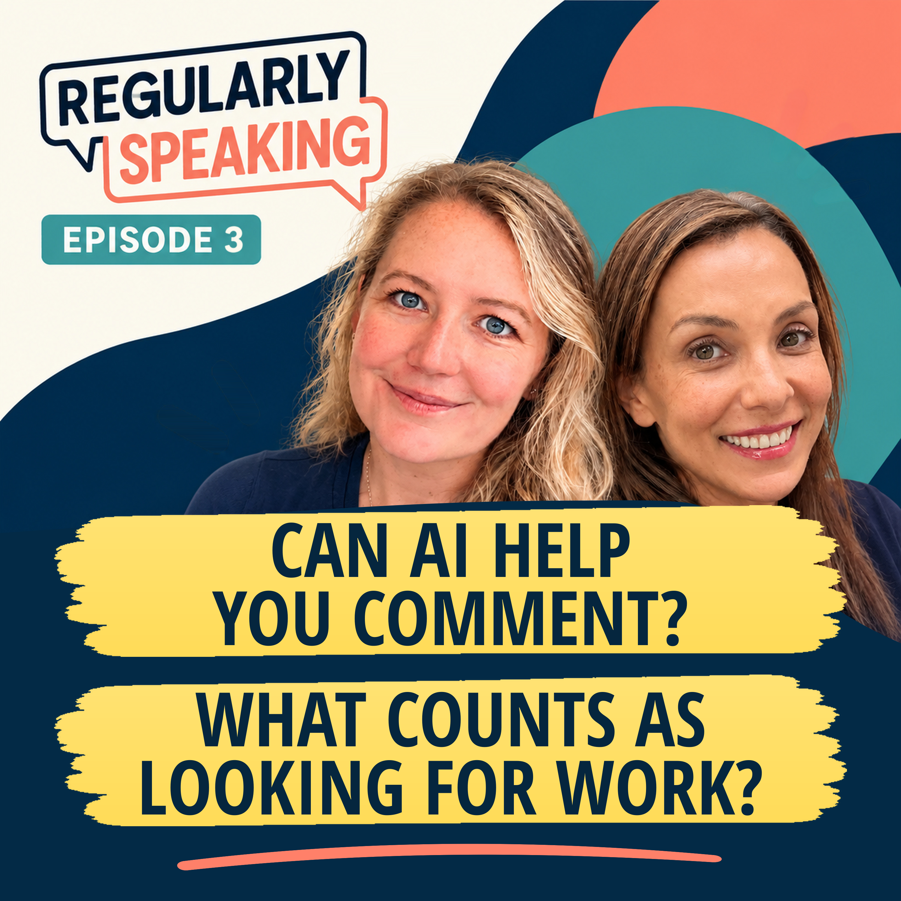

Can AI Help You Comment? What Counts as Looking for Work?

In our third episode, we look at two things: how to use AI thoughtfully when drafting a public comment, and a Department of Labor proposal that would set a national minimum number of weekly job-search activities for people receiving unemployment benefits. We explain what's in the proposal and how you can weigh in before comments close on January 11, 2027.
Watch or listen:
Follow us on Instagram (opens in a new tab) for behind-the-scenes updates.
Rebecca Bond & Kristin Stitcher
Former U.S. Department of Justice civil rights attorneys who helped develop federal disability rights regulations.
Want to weigh in on this rule?
The Department of Labor is accepting public comments on this rulemaking through January 11, 2027.
Transcript
Full transcript
Rebecca: If you lost your job, what would you have to do each week to keep getting unemployment benefits? That's what the Department of Labor is considering right now, and they are asking for your feedback.
Kristin: The Department of Labor has proposed a national minimum of five job search activities every week, reported before you're paid unemployment benefits. Today, we'll explain what that would mean and why your experience looking for work or hiring is exactly what the department needs to hear.
Rebecca: A lot of people now use AI to help them write. We'll talk about using it for a public comment that still says what you think.
Rebecca: Welcome to Regularly Speaking by Public Powered Policy. This is the show that helps you have a say in the rules that affect your life. I'm Rebecca Bond.
Kristin: And I'm Kristin Stitcher. In case you're new here, we are former Justice Department civil rights attorneys, and we help explain federal proposals about rulemakings and how you can weigh in before those are final.
Rebecca: So it is Thanksgiving week. So whether you're cooking or you're traveling or taking a break, thank you for spending part of it with us. We're gonna finish with a question about the Thanksgiving table.
Rebecca: So our Burning Question for today is, how can AI help you write a public comment that reflects what you actually think? AI is a tool, and we're not telling you whether or not to use it. But if you do, we wanna help you use it thoughtfully.
Kristin: Yeah. So there is also, of course, the question of how federal agencies use AI to review comments themselves. We're setting aside that topic for today. We might come back to it in a future episode. But today, what we're focusing on is how you can use AI to understand a proposed rule and draft your own comment that reflects your voice.
Rebecca: So what are you using AI for these days? I'm really curious.
Kristin: Yeah. I feel like I use it for a number of things. I find it really helpful for research. Sometimes I'll ask it to generate citations of sources for me. I will use it to help clean up my writing. So yeah, really a pretty wide array of things. How about you?
Rebecca: I also use it a good amount. I have used it to help code our website, which has been wonderful 'cause I didn't have a coding background. I've used it to edit the podcast, to do research, and recently, I actually asked it to write me a birthday poem.
Kristin: I mean, I have so many questions. So you commissioned your own birthday poem. Also, what is a birthday poem?
Rebecca: I asked for just a short poem about me for my birthday. It was lovely, I have to say. I know your birthday's coming up pretty soon, so you should…
Kristin: That's so cute. Yeah, maybe I also need my first birthday poem.
Rebecca: So, talking about AI and public comment, here is a story that I just found to be, like, a little bananas.
Rebecca: So my friend Isabelle sent me a comment that her new AI agent had written for her. It was about a federal proposal.
Kristin: Oh, okay. So she asked it to write it for her?
Rebecca: That's the thing. She did not ask it to.
Kristin: What?
Rebecca: So I know, I know it's crazy. So here's what she texted me. She said, "I didn't want it to comment. It just guessed based on what I've talked to it about." So it just did it on its own.
Kristin: Wow.
Rebecca: Yeah, I mean, it's sort of… It's so nuts. Yeah. The proposal was about E-Rate. E-Rate is a program that helps eligible schools and libraries pay for internet service and equipment. And so her agent kind of independently tried to connect it to things that she cares about, and pointed her to a chance to comment, and actually wrote a draft for her in the first person.
Kristin: Wow. I mean, part of this is kind of cool, right? Like, you and I spend a lot of time helping people just, like, get connected to the rulemakings where they might wanna comment, right? Like, that they might be interested in, that impact them. So, I mean, helping people discover that these opportunities exist is cool.
Rebecca: Yeah, that was my first thought. I was like, "Oh my gosh, this is so great." You know, this is AI sort of increasing, you know, civic participation. But then I looked more closely at it. I started to get a little freaked out, frankly, because it had already decided what she should say.
Rebecca: So the draft urged the agency to reject changes that would limit the program, and her AI agent knew that she cared about libraries, which she does, but that doesn't tell you what she thinks about every proposal involving libraries.
Kristin: Oh, wow. Yeah, that's like next level. And I also feel like once you have a polished draft just sitting in front of you, it's so easy to either just submit it or just kind of like tinker with the wording without really thinking about whether you agree with the concepts.
Rebecca: Exactly. Exactly. And there's a line in there that says, and I quote, "E-Rate is the reason my library can offer free internet." So that's what the AI agent wrote. And, you know, it's true. Maybe it's not true. But it's a claim about her library that was made in her [name]. She, of course, would need to check it first. But the fact that it said that so definitively without knowing is really kind of a point of concern.
Kristin: Wow. Yeah, that's kind of unbelievable. So did the AI agent tell her to submit it? What did it do next?
Rebecca: Well, that's the good part. It didn't tell her to submit it. It said that she should review the draft and decide for herself. But it would've been much better to help her understand the choices before writing a position for her.
Kristin: So if someone listening or watching this podcast wants AI help with a comment, where should they start?
Rebecca: They should start with a proposal. Give the AI the official link or text and ask what would change with this proposal. What is the agency asking people about? You should ask it to explain the main arguments in plain language, and then show you the passages that you're using. And so if the answer sounds one-sided, ask what someone who disagrees would want you to consider. And it's really fine to sort of say, "I'm not ready to take a position yet."
Kristin: That makes a lot of sense. No, that's so helpful. And then after doing that, then I feel like that's a good time for the person to bring in what they know, their experiences.
Rebecca: Exactly. Exactly. And you could try something like, you know, "Ask me one question at a time about my experience." You know, don't assume what happened. Don't assume what I believe. And, you know, for today's proposal that we're gonna talk about in a minute, that might be, how long did applications take? What actually got you an interview? Answer in plain words, even rough notes. When you're ready, then you can ask it to organize your answer into a comment using only what you have confirmed, and flag anything that you want to add.
Kristin: Yeah. And what if I, the person writing it, only have one story, like one experience that connects with the proposed rule?
Rebecca: That could be really helpful. One specific experience can help an agency see how a rule would work in real life. Say what happened, say why it matters to the proposal, and what you want the agency to consider. You don't have to turn it into a claim about everyone.
Kristin: Yeah. Okay, so now you've worked with the AI agent. Now you're ready to review the comment. What should the person be looking for?
Rebecca: So read every sentence. You know, ask yourself, "Does this actually say what I mean?" Did "might this happen" turn into "this will happen"? You know, did it go a little too far? Did it add an experience you never described or assume facts that you don't know about? If you read it and there's a sentence in there that you couldn't explain to your friend, take that sentence out.
Kristin: Yeah. Yeah. And just adding on to that, check the facts, right? AI can confidently get things wrong and even invent sources. And also you'll wanna open the links and make sure that they accurately support the claim. Get the deadline and filing instructions from the agency's own page too. And then just like bear in mind that simply asking AI, "Are you sure?" right, is not a real check. It's probably not gonna be a sufficient check.
Rebecca: Exactly. And, you know, one thing to also just keep in mind, keep account numbers and other private details out of what you give the AI agent, and remember that comments are public. And once you've done that, just submit the comment yourself. As we've said before, there are great instructions on how to submit a comment on publicpoweredpolicy.org.
Kristin: Yeah. I think another thing to keep in mind is that you can use a lot less AI than what we've just talked about. You could ask it simply to explain one paragraph that you find confusing. Or you could write the whole comment that you have yourself and ask it to help you clean up the grammar. So there's a lot of options there.
Rebecca: Yeah. So I mean, really the question at the end of the day is simple: Does this say something I understand, and does it say something I actually wanna say?
Rebecca: So let's now turn to the proposal, the rule that we wanna examine for today, and this is really a proposal where your experience could really matter.
Rebecca: So if you've applied for a job recently, you may recognize this. You upload your résumé, then the website asks you to type in everything that was already on your résumé, and you check it three times, and you hit submit, and then you wait.
Kristin: And then you check your email every five minutes hoping that somebody writes you back.
Rebecca: Yeah, I mean, looking for work takes real time. And, you know, if you've lost your job, you're doing all of this while worrying about next month's bills. And unemployment insurance can really give temporary financial help to eligible workers who lost their jobs through no fault of their own.
Rebecca: And states run the program, but they run it within federal rules. So today's proposal is about the job search itself, what people would have to do each week to keep receiving benefits. So what do you have to do each week to make sure that you're still getting paid? And about how you report what it is you're doing. So, you know, if you've looked for work, you've hired someone, or you've helped someone through the unemployment system, the Department of Labor needs to hear from you.
Kristin: And you can come at this from either side of hiring, right? Like, which job search activities actually got you a callback or an interview? Which took hours and went nowhere? What helped you find a good candidate if you're the one doing the hiring? Those details help show whether the department's approach and proposal would actually work in practice. Okay, so now let's talk about what this proposal, the Department of Labor's proposal, would change.
Kristin: So people receiving unemployment benefits generally already have to look for work under existing rules, but those rules do differ by state. Some states require that they do one activity a week. A few states require five activities. The proposal would set a national minimum of five qualifying job search activities each week, reported before you're paid those benefits. Those activities include things like job applications, interviews, skills tests for a specific employer, contacts with placement agencies, and asking your union for a job referral.
Kristin: And it doesn't have to be five applications, right? Like, you can mix and match these different kinds of activities or repeat the same kind. States would also have another option, a point system. So instead of counting every activity the same, a state could make each activity worth one, two, or three points, and people would need five points a week. That way, some activities would count for more than others.
Kristin: Okay, so there are some exceptions, too. A few examples. You're in state-approved training and making progress, you've accepted a job that starts within four weeks, or jury duty keeps you from meeting that minimum five activities. Again, this is still only a proposal. So if you are receiving benefits now, just keep following your state's current instructions.
Rebecca: And just to clarify, the Department of Labor says a national standard would strengthen the program's integrity and accountability, make the rules consistent from state to state, and help people get back to work faster. It points to states that already require five as evidence that the number is workable.
Rebecca: Some labor advocates, however, argue that five a week would be hard for many people to meet, for example, people with certain disabilities or unreliable access to technology, and costly for states to put in place. So a clear target could help someone plan their week, but it's worth asking whether or not this approach would work. How should the rule account for how long different activities take? What would help people go after jobs they could actually get? And how would someone show that they've done what was required? These are all very practical questions. You don't need to be an economist to explain what happened in your own job search.
Rebecca: So this time we're going to imagine somebody named Jordan. Jordan is totally fictional. But Jordan has been laid off from an office management job, and on Monday, Jordan spends three hours on one application with a cover letter and written answers about handling difficult situations at work.
Rebecca: And then on Tuesday, Jordan interviews with a different company, and then on Wednesday, a third employer asks Jordan to take a skills test. So that's three activities. If each one counts and no exception applies, Jordan needs at least two more that week. And the question is, would those two help Jordan actually find work? Would they keep other options open while Jordan waits to hear back? Or would they pull time away from the most promising lead?
Kristin: And someone else's week could look completely different, right? A person applying to jobs with short online forms might finish several in an afternoon, and a person in some type of specialized field might spend days on one form.
Kristin: So a useful comment describes what your activities actually involved, right? The kind of work you were looking for, roughly when and where, and how much time it took. If you kept a job search log, that would be useful to include as well. So you might support a weekly minimum in your comment because it kept you organized. You might want more flexibility because having to hit a fixed number pulled you away from other good opportunities. Either way, explain what led you there.
Rebecca: And this is really where the points option comes in. Remember, a state could choose to make some activities worth more than one point. Under the proposal, extra points would go to activities that connect people with industries and places that need workers or that have strong evidence of leading to jobs. So which activities deserve more weight and why? States could also choose to count things like career workshops. If a workshop helps you to fix your résumé and that led to interviews, say so, and suggest how the rules should recognize that kind of help. If it didn't help, what would have helped you? These are all useful things to put in your comment.
Kristin: Totally. And employers, of course, have something to add here, too. So if you hire people, what makes an application useful? Does your process involve several interviews, several steps, or a long assessment? Which recruiting activities actually bring in qualified applicants? And if you're a career counselor, you could describe patterns you've seen across many job seekers. Just be clear about what comes from data you've gotten and what comes from your impression. Okay, so now back to Jordan.
Kristin: There's doing the job search, and then there's the act of reporting it, right? Of reporting the activities. Under the Department of Labor's proposal, people would report the details of each activity before they're paid unemployment benefits for that week. States would still decide how reporting works, and they'd have to give people written notice explaining the requirements. If someone doesn't meet the requirements for a week, the state couldn't just give a warning and pay that week anyway. The person would be ineligible for that week.
Rebecca: It's taking away some of the discretion that the states have.
Kristin: Yes. Yes, absolutely. And a misunderstanding could cost someone a week of benefits.
Rebecca: Hmm.
Kristin: [People] need to be able to understand what to do and how to record it in compliance with the rules.
Rebecca: So, back to Jordan. Imagine Jordan after the interview, wondering what information or documents to save. Does he save the interviewer's name? The date? The confirmation email? To be clear, the proposal does not list those particular records.
Rebecca: We're asking what good instructions should cover. So those are things you could put in your comment. If you've used an unemployment reporting system, your experience is especially useful here. Were the instructions clear? Could you tell whether your report went through? If something went wrong, could you reach somebody who could help? Please be specific in your comment. And did it take 10 minutes to fix or several calls over several days? Did a payment come late? If you suggest a simpler approach, explain how the state would still get the information that it needs.
Kristin: I think it also helps to separate the federal proposal from the choices that a state makes. A confusing website, right? That might be a state website, and it needs a fix by the state, and that's important, right? It would be a big bummer to miss out on—to say the least, right?—a week of benefits because of a problem with a state website. But your story can still show the Department of Labor, which is a federal agency, what safeguards or clear standards are needed. And if your situation doesn't fit the usual pattern, describe it.
Kristin: Tell them about it, what you could do, what got in the way, and what flexibility would have helped you.
Kristin: Rebecca, last week I think I shared a sample made-up comment. Do you have one this week?
Rebecca: Oh, I do. You set a high bar last week, so I tried.
Kristin: Great.
Rebecca: Okay, so here it is. So this is the sample comment. "During my search for accounting work, I completed four applications in one week. Each required written answers that took about two hours. Two led to interviews. I'd like the department to consider how a weekly standard should account for that time." Okay. So that's the comment. And so in your own comment, you would use your own facts, say when you're estimating, and suggest what change would help.
Kristin: And if you use AI to organize your notes, check that it keeps your experience and your recommendations intact.
Rebecca: So just a few brass tacks. Really important. Comments are due January 11, 2027. So although that's next year, it's not that far away.
Kristin: That time will go fast.
Rebecca: Yeah. Fast. So the comment link and docket number are in our show notes. Just start with one thing that helped you find work or one obstacle a better rule could fix. And remember, comments are public, so leave out account numbers and any private details.
Kristin: Yeah. Okay. Time for Regulated Fun.
Rebecca: Yay.
Kristin: Okay, you previewed this a bit earlier, but since it is Thanksgiving week, the question today is, what is your favorite Thanksgiving side dish, right? Like, the one you would be disappointed, you would be sad if you didn't see it on the table.
Rebecca: Okay, so this is… I don't know. Maybe all these questions are hard, and they're all thus far about food.
Kristin: Yeah.
Rebecca: Fun.
Kristin: We love food.
Rebecca: Yeah. And so my friend cooks just an amazing Thanksgiving dinner, and he makes great sides. But I have to say, I think my favorite one are the potatoes au gratin. They're…
Kristin: Oh, wow.
Rebecca: Oh, he slices them, like, the perfect level of thickness.
Kristin: My gosh.
Rebecca: Just so tasty. So I'm actually really looking forward to those.
Kristin: Oh, that sounds so good.
Rebecca: What about you?
Kristin: Okay, mine, it has been my favorite since I was a kid. It is green bean casserole.
Rebecca: Yeah.
Kristin: I love it. Yes. Yes. And I actually, I'm usually the one who makes it now, but it might also be the only time of the year that I have green bean casserole, so it's fun.
Rebecca: Well, yeah. I mean, it's special. It's for…
Kristin: Exactly. Exactly.
Rebecca: Yes. So to those who are watching and are listening, please tell us your favorite Thanksgiving side on Instagram. We would love to hear what belongs on your Thanksgiving table.
Kristin: Yes. And if you have a good green bean casserole recipe, send it my way.
Rebecca: Yes, exactly.
Kristin: Okay, so before we go, next Tuesday, December 1, is GivingTuesday.
Rebecca: So everything that we do comes back to one idea. Everyone deserves a say in the policies that shape their lives, and that's why this podcast and our commenting toolkit are free.
Kristin: Yeah. So there are lots of ways to be part of our work, our mission. You can subscribe to this podcast, Regularly Speaking, on YouTube, Apple, Spotify, or Substack. Give us a follow on Instagram or LinkedIn. We also, on Instagram, we share reels about other rules that are open for comment, so you can get that type of information there too. You can use our toolkit to submit a comment, or you can tell a friend about us.
Rebecca: Yes, please tell your friends. And if you are able to give a contribution, that helps keep these resources free and helps us to build new ones. But you don't have to donate to be part of this. You'll find all of it at publicpoweredpolicy.org.
Kristin: Thank you for listening this Thanksgiving week. I know it's a busy week, so we are grateful for everyone who takes the time to bring their own experiences into these conversations and into submitting comments.
Rebecca: Yes. Well, I'm thankful for you, Kristin, and I'm thankful for all of our listeners and watchers. If you know someone who's been looking for work or who helps people find jobs, please share this episode with them. They may have something useful to say.
Kristin: Yes. The proposal, the comment link, and a sample AI prompt are in our show notes, and I will also wanna add that I am thankful for you, Rebecca.
Rebecca: Aw, thank you! Well, thanks to everyone for joining us, and however you're spending this week, please take care. Let's put the public back in public policy. Happy Thanksgiving, everyone.
Have something to say about this episode's rule? Comment on regulations.gov (opens in a new tab) before January 11, 2027.